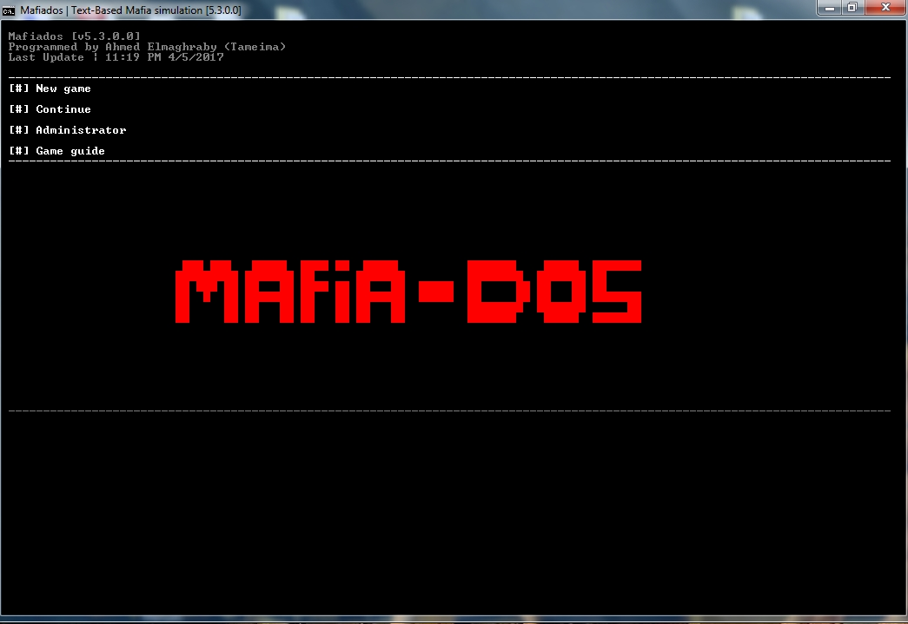
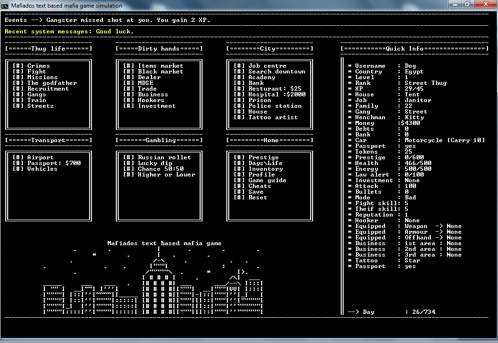

I made a text based mafia game (Mouse click support). and i need to add some gui like buttons, is that possible? or is there any plugin to help me in this?
also i need to know how to make limitation for characters in line or space.
for example:
Money: 50 | HP: 100 | Some text.
when money rising to 10,000 the HP getting out of the screen. i want to make limitation number of character.
Thnx


Batch file mafia game [Little help]
Moderator: DosItHelp
-
ShadowThief
- Expert
- Posts: 853
- Joined: 06 Sep 2013 21:28
- Location: Virginia, United States
Re: Batch file mafia game [Little help]
I've seen batbox do this, and I can pretty much guarantee that misol101 will come in here and tell you to use cmdgfx. That said, if you're looking for actual buttons like

then you're out of luck.
Use substrings (https://www.dostips.com/DtTipsStringOpe ... LeftString) to crop the text on the end.
Re: Batch file mafia game [Little help]
Dude, you totally need to use cmdgfx!!

Seriously though, everything seems to be in place already, so no need for that.
I seem to recall that Aacinis GetInput utility had support for mouse dialogs. I would recommend that.
EDIT: Just to elaborate slightly: This game does not look like it would have any need for:
1. High FPS, smooth animation, or moving objects
2. Key or mouse input while the game or animation runs in the background
3. Any need for 3d or fancy special effects
4. Any need for dialogs or buttons that look fancy or non-standard
So, for these reasons, using cmdgfx would not only be unnecessary, but also a waste of time (its flexibility comes with a higher setup and complexity cost).
Seriously though, everything seems to be in place already, so no need for that.
I seem to recall that Aacinis GetInput utility had support for mouse dialogs. I would recommend that.
EDIT: Just to elaborate slightly: This game does not look like it would have any need for:
1. High FPS, smooth animation, or moving objects
2. Key or mouse input while the game or animation runs in the background
3. Any need for 3d or fancy special effects
4. Any need for dialogs or buttons that look fancy or non-standard
So, for these reasons, using cmdgfx would not only be unnecessary, but also a waste of time (its flexibility comes with a higher setup and complexity cost).
Re: Batch file mafia game [Little help]
Could you please give me example about making gui menus, buttons, colors?
Thnx
Thnx
Re: Batch file mafia game [Little help]
You could use hta, javascript/vbscript or powershell if it is available on that OS to create GUI message boxes.
PowerShell examples:on separate lines…Although I'm guessing that that isn't really what you want, because as soon as you create GUI boxes you no longer have a text based game!
Would something like this not work for you instead?
PowerShell examples:
Code: Select all
@PowerShell -Command^
"[Reflection.Assembly]::LoadWithPartialName('System.Windows.Forms')|Out-Null;"^
"[System.Windows.Forms.MessageBox]::Show('Money: 50 | HP: 100 | Some text')">Nul]Code: Select all
@PowerShell -Command^
"[Reflection.Assembly]::LoadWithPartialName('System.Windows.Forms')|Out-Null;"^
"[System.Windows.Forms.MessageBox]::Show(\"Money: 50`nHP: 100`nSome text\")">NulWould something like this not work for you instead?
Code: Select all
@Start "Inventory" /Wait Cmd /Q /C "Mode 16,7&Color 5E&Echo(&Echo Money: 50&Echo HP: 100&Echo(&Echo SomeText&Echo(&Timeout 5 >Nul"Re: Batch file mafia game [Little help]
As everyone already told you - "text based" and "GUI" don't go together. Neither do "Batch window" and "GUI" (even if misol101 is a wizard who tries to overcome all limitations). And neither do "text based" and "mouse input". Why is everybody so keen on making a console window what it never will be?
Nevermind.
I used conin.exe to be found in post #62 of that thread
viewtopic.php?p=51138#p51138
because I wrote it (only because someone requested it) and am familiar with its functionality.
In the same thread you'll find a lot of useful tools btw.
Carefully read the comments in the code in order to understand how it works.
Steffen
Nevermind.
I used conin.exe to be found in post #62 of that thread
viewtopic.php?p=51138#p51138
because I wrote it (only because someone requested it) and am familiar with its functionality.
In the same thread you'll find a lot of useful tools btw.
Code: Select all
@echo off &setlocal
:: print the buttons (I used ASCII characters to make sure everybody sees the same independing on locale settings)
echo(
echo @@@@@@@
echo @@ A @@
echo @@@@@@@ @@@@@@@
echo @@ C @@
echo @@@@@@@ @@@@@@@
echo @@ B @@
echo @@@@@@@
echo(
echo click on a button
echo(
:: label where to jump in order to run conin again
:loop
:: conin.exe - Read Console Input
:: timeout: %errorlevel% = 0
:: type: %errorlevel%>>29 (0=keyboard, 1=left click, 2=right click, 3=mouse move)
:: key: %errorlevel% (either character code or (for extended keys) 256 + key code)
:: mouse: row = (%errorlevel%>>14)&0x3FFF, column = %errorlevel%&0x3FFF
:: the utility times out after the passed number of milliseconds, it will wait infinite if you don't pass an argument
conin.exe
:: calculate the values according to the explanation above
set /a "key=%errorlevel%, type=key>>29, y=(key>>14)&0x3FFF, x=key&0x3FFF"
:: if the input type was not 1 (left mouse click) then run conin again
if %type% neq 1 goto loop
:: else call a subroutine to check if a button was clicked; each passed group of values represents a button and consists of:
:: "top_left_corner_horizontal_offset,top_left_corner_vertical_offset,bottom_right_corner_horizontal_offset,bottom_right_corner_vertical_offset"
:: note that the coordinates are zero-based (that is, the top left corner of the window has coordinates 0,0 and is the origin of the button coordinates)
:: the subroutine returns 0 if the click was outside of any button rectangles (run conin again in that case),
:: otherwise it returns the index of the matched group (1 for the first group, 2 for the second group, etc.)
call :check "1,1,7,3" "6,5,12,7" "17,3,23,6" && goto loop
:: assign the returned index to a variable
set "n=%errorlevel%"
echo button #%n% clicked
pause
exit /b
:check
setlocal EnableDelayedExpansion
set "idx=1"
:: enumerate all passed value groups and check if the x and y coordinates of the mouse click fits into one of the rectangles
for %%i in (%*) do (
for /f "tokens=1-4 delims=, " %%j in (%%i) do (
if %x% geq %%j if %y% geq %%k if %x% leq %%l if %y% leq %%m for %%n in (!idx!) do (endlocal&exit /b %%n)
)
set /a "idx+=1"
)
endlocal
exit /b 0
Steffen